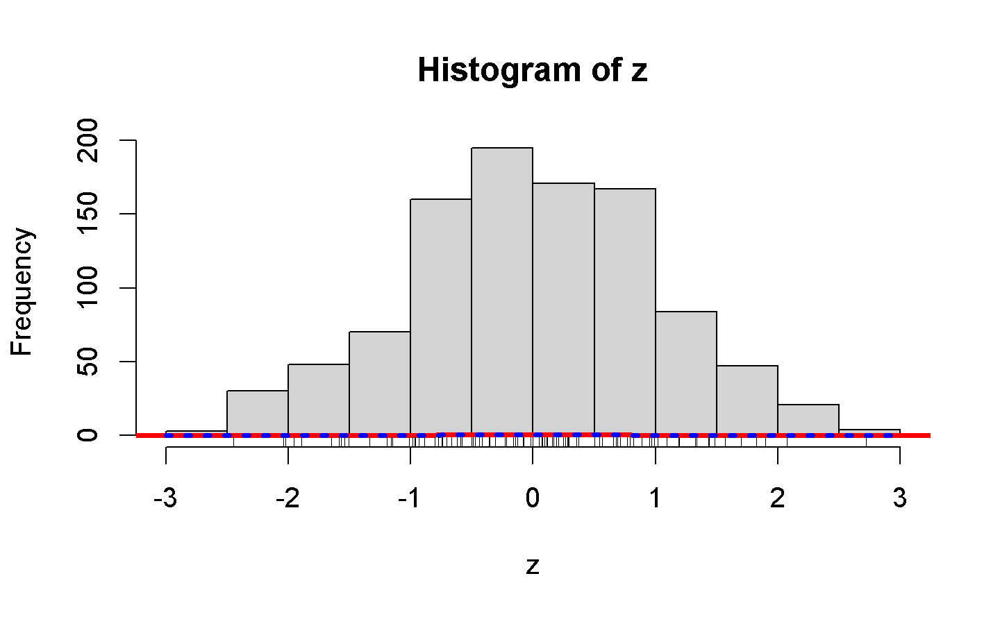
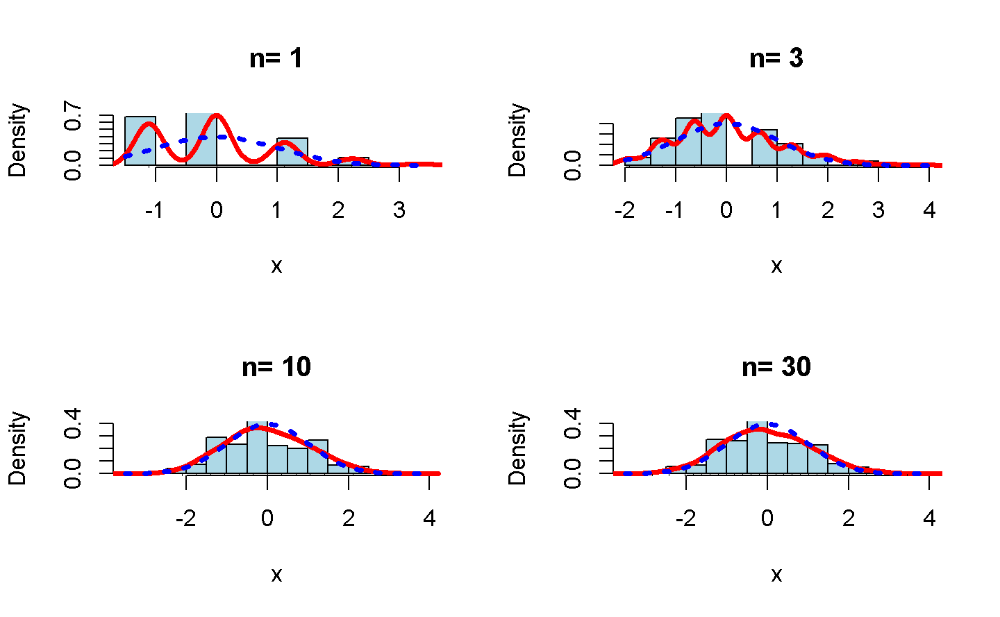

Chapter 9 Sample and Distribution 01
## 隨機抽樣 函數sample(x,n,replace=FALSE ). 其中x為要抽取的向量, n為樣本容量. replace 預設為false
- no replacement, 等機率:
例如從52張撲克牌中抽取5張:
[1] 45 23 12 37 38
- replacement: 例如拋一枚均勻的硬幣10次
[1] "H" "H" "H" "T" "T" "H" "H" "H" "H" "T"
練習:一棵骰子擲10次可表示為:
- 不等可能的隨機抽樣: sample(x, n, replace=TRUE, prob=y) prob=y指定x中元素出現的概率, 向量y與x等長度. 例如一娃娃機取出成功的概率為0.6, 那麼10次的試驗為:
[1] "fail" "fail" "sucess" "sucess" "sucess" "fail" "sucess" "sucess"
[9] "fail" "fail"
9.1 排列組合與概率的計算
例 從一副52張撲克中取4張, 求以下事件的概率:
1. 抽取的4張依次為紅心A，方塊A，黑桃A和梅花A的概率;
2. 一次抽取4張為紅心A，方塊A，黑桃A和梅花A的概率.
his summation expression \(\sum_{i=1}^n X_i\) appears inline.
解
1) 抽取的4張是有次序的, 因此使用排列來求解. 所求的事件(記為A)概率為 \(P(A)=\frac{1}{52 \times 51 \times 50 \times 49}\)
利用R函數
[1] 1.54e-07
- 沒有次序的, 可以使用組合數來求解.
\[ P(B)=\frac{1}{(52,4)} \]
其中 \((n,m)=\frac{n!}{m!(n-m)!}\),可以利用函數choose(),例如
[1] 3.69e-06
9.2 distribution
標準表格上下沒有線條,左右有
| 名稱 | R函數 | 選項 |
|---|---|---|
| beta | beta | shape1, shape2 |
| binomial | binom | size, prob |
| Cauchy | cauchy | location=0, scale=1 |
| chi-sqaured (\(\chi^2\)) | chisq | df, ncp |
| exponential | exp | rate |
| Fisher (F) | f | df1, df2, ncp |
| gamma | gamma | shape, scale=1 |
| geometric | geom | prob |
| hypergeometric | hyper | m, n, k |
| lognormal | lnorm | meanlog=0, sdlog=1 |
| logistic | logis | location=0, scale=1 |
| multinomial | multinom | size, prob |
| normal | norm | mean=0, sd=1 |
| negative binomial | nbinom | size, prob |
| Poisson | pois | lambda |
| Student’s (t) | t | df |
| uniform | unif | min=0, max=1 |
| Weibull | weibull | shape, scale=1 |
| Wilcoxon’s statistics | wilcox | m, n |
| signrank | n |
對於所給的分佈名稱，有四類。
以func為例， 四類函數的對應為:
1. 「d」概率密度函數: dfunc(x, p1, p2, …), x為數值向量;
1. 「p」(累積)分佈函數: pfunc(q, p1, p2, …), q為數值向量;
1. 「q」分位數函數: qfunc(p, p1, p2, …), p為由概率構成的向量;
1. 「r」隨機數函數: rfunc(n, p1, p2, …), n為生成數據的個數
這四類函數的第一個參數是有規律的: 形為dfunc的函數為x，pfunc的函數為q，qfunc的函數為p，rfunc的函數為n
note: (但rhyper和rwilcox是特例，他們的第一個參數為nn). 非中心參數(non-centrality parameter)僅對CDF和 少數其它幾個函數有效.
\[ \frac{{\sum\limits_{i = 1}^n {{x_i} - n\mu } }}{{\sqrt {n{\sigma ^2}} }} \sim N(0,1) \]
\[ \bar X = \frac{{\sum_{i = 1}^n {{x_i} } }}{n} \sim N(\mu, \sigma^2/n) \]
uniform a~b
\[\mu = (a+b)/2\]
\[\sigma^2=\frac{(b-a)^2}{12} \]
data的每一個ROW有sample size (=i=column)
共1000次(=N=row)
N=1000
i=3 #sample size
mu=0.5
sigma=1/sqrt(12)
data<-matrix(runif(i*N),ncol=i)
rs<-rowSums(data)
rs<-rs/i
z<-(rs-mu)/(sigma/sqrt(i))
hist(z)
lines(density(z), col = 'red', lwd = 3)
x<-z
curve(dnorm(x), col = 'blue', lwd = 3, lty = 3, add = T)
rug(sample(z,100))
limite.central <-
function (r = runif, distpar = c(0, 1), m = .5, s = 1 / sqrt(12), n = c(1, 3, 10, 30), N = 1000) {
for (i in n) {
if (length(distpar) == 2) {
x <-matrix(r(i * N, distpar[1], distpar[2]), nc = i)
} else {
x <-matrix(r(i * N, distpar), nc = i)
}
x <-(apply(x, 1, sum) - i * m) / (sqrt(i) * s)
hist(x, col = 'light blue', probability = T, main = paste("n=", i),
ylim = c(0, max(.4, density(x) $y)))
lines(density(x), col = 'red', lwd = 3)
curve(dnorm(x), col = 'blue', lwd = 3, lty = 3, add = T)
if (N > 100) {
rug(sample(x, 100))
} else {
rug(x)
}
}
}
op <- par(mfrow=c(2,2))
limite.central(rbinom, distpar=c(10 ,0.1), m=1, s=0.9)
par(op)
- apply(x,1,sum) 第2個參數1表示row 方向,如果是2表示column 和matlab 相反。